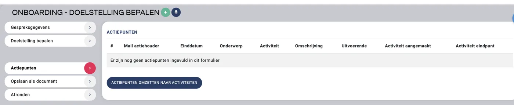
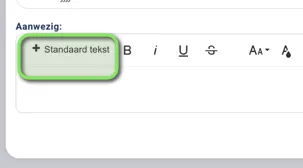
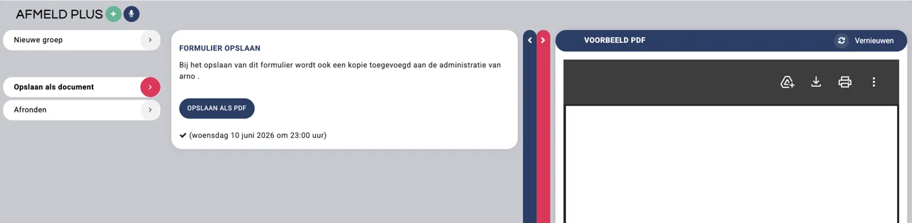
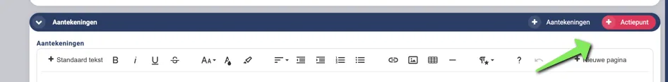
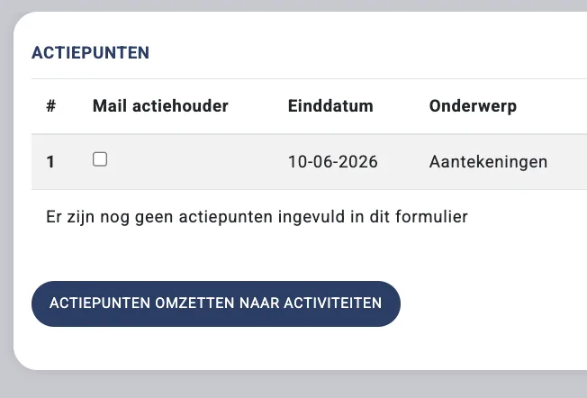
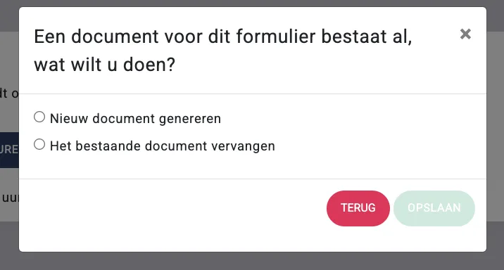

Formulier invullen, actiepunten aanmaken en PDF bekijken
Leer hoe je tabbladen gebruikt, vragen invult, actiepunten toevoegt en de PDF-preview controleert, opslaat, verzendt en afrondt.
Hoe een formulier is opgebouwd en wat je tijdens het invullen ziet
Formulieren zijn opgebouwd met een vaste structuur. Dit kan een gespreksverslag zijn of een risicoinventarisatie. Tijdens het invullen navigeer je via het linker menu door de onderdelen. Je ziet direct hoe de PDF eruitziet via een live preview aan de rechterkant.
De opbouw van een formulier:
Menustructuur — afhankelijk van wat je bij Agenda aanvinkt, verschijnen de bijbehorende onderdelen in het menu. Je kunt altijd klikken door het menu, en weer terug gaan
Invulpagina — het gedeelte waar je alle vragen beantwoordt.
Actiepunten — bij elk onderdeel kun je een actiepunt toevoegen.

Standaardteksten — bij elke vraag kun je standaardteksten inplakken voor een gepsreksverslag. Met standaard teksten kun je snel teksten toevoegen. De standaard teksten zijn in te stellen via de beheerder. Zie hiervoor deze pagina.

Navigatie — gebruik de pijltjestoetsen onderin om naar de vorige of volgende pagina te gaan.
Voorbeeld PDF — klik op de balk rechts om de preview van het rapport te zien.

Formulier invullen via tabbladen in het linker menu
Vul het formulier altijd van boven naar beneden in. Antwoorden op eerdere vragen bepalen welke vervolgvragen zichtbaar worden. Gebruik de pijltjestoetsen onderin om stap voor stap door het formulier te navigeren.
Klik op een tabblad in het linker menu om de bijbehorende vragen te openen.
Vink aan welke onderwerpen voor de klant van toepassing zijn.
Vul de vragen in per onderwerp.
Vragen invullen en automatisch tussentijds opslaan
Elke vraag wordt automatisch tussentijds opgeslagen zodra je een veld invult, mits je een internetverbinding hebt.
Tabbladen bevatten standaardvragen zoals tekstvelden, keuzelijsten of getalvelden.
Bij elke vraag kun je standaardteksten inplakken via de standaardtekstenknop.
Actiepunt aanmaken vanuit een vraag met het plusje
Wil je iets uitzoeken of later op terugkomen? Maak dan direct een actiepunt aan bij het betreffende onderdeel.
Klik rechtsboven op + actiepunten bij het betreffende onderdeel.
Vul het actiepunt in.

Actiepuntgegevens invullen
Vul de volgende gegevens in bij een nieuw actiepunt:
Kies het type actiepunt.
Vul de uitvoerende in (medewerker of team).
Stel de einddatum in.
Stel de prioriteit in.
Stel de status in.
Geef een onderwerp op.
Voeg optioneel een toelichting toe.
Koppel het actiepunt eventueel aan een product (indien activiteiten worden omgezet naar activiteiten.

Alle actiepunten bekijken en mailen naar actiehouder
Alle actiepunten zijn terug te vinden in het linker menu onder Actiepunten.
Ga in het linker menu naar het onderdeel Actiepunten.
Bekijk het overzicht van alle toegevoegde actiepunten.
Klik op het prullenbak-icoon rechts bij een actiepunt om het te verwijderen. Ga naar specifieke plek waar actiepunt is aangemaakt.
Aan het einde van het gesprek kun je een of meerdere actiepunten per e-mail sturen naar de actiehouder. Dit kan zowel de klant als de adviseur zijn. Maar meestal is actiepunten ook opgenomen in de PDF, afhankelijk van de instellingen van het formulier door de beheerder.
Live PDF-voorvertoning controleren tijdens het invullen
Aan de rechterkant van het scherm zie je live hoe de PDF eruitziet. Dit is een tussentijdse preview, nog geen definitieve output.
Klik op de zwarte balk rechts om de PDF-preview te openen.
Heb je een wijziging aangebracht en wil je die terugzien in de preview? Klik dan op Vernieuwen.
Formulier opslaan als PDF of direct per e-mail verzenden
Je kunt het formulier tussentijds opslaan of direct naar de klant sturen.
Klik op "Opslaan als PDF" om het document tijdelijk op te slaan.
Verstuur het document eventueel direct per e-mail aan de klant. Dit kan wanneer dit is ingesteld door de beheerder.
Formulier definitief opslaan door af te ronden en actiepunten omzetten naar CRM-activiteiten
Wanneer het gesprek klaar is, rond je het formulier definitief af.
Controleer of je alles hebt ingevuld.
Klik op Afronden om het formulier definitief op te slaan.
Wanneer PDF al bestaat, dan volgt een vraag of een nieuwe pdf aan te maken of te vervangen.

PDF wordt opgeslagen bij documenten van de klant
Veelgestelde vragen
Waar vind ik alle actiepunten in het formulier?
In het tabblad Actiepunten links in het menu zie je een overzicht van alles wat je hebt aangemaakt.
Kan ik tussendoor een PDF maken zonder af te ronden?
Ja. De rechterbalk toont live de PDF-preview. Je kunt ook handmatig opslaan via "Opslaan als PDF". Klik op Vernieuwen om een recente wijziging in de preview te zien.
Wat voor soort vragen kunnen in een formulier staan?
Tekstvelden (vrij of opgemaakt), één tekstregel, numerieke velden, meerkeuzeopties, lijsten, documentvelden en handtekeningvelden. Welke velden beschikbaar zijn, hangt af van de instellingen van je beheerder.
Kan ik een actiepunt koppelen aan een product?
Ja, mits deze optie is geactiveerd door je beheerder.
Wordt het formulier automatisch opgeslagen?
Ja, elke vraag wordt tussentijds opgeslagen, mits je een internetverbinding hebt.
Kan ik actiepunten mailen naar de klant?
Ja. Aan het einde van het gesprek kun je een of meerdere actiepunten per e-mail versturen naar de actiehouder, dat kan de klant of de adviseur zijn.
Bron: helpcenter Finly